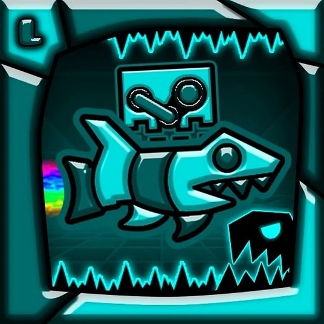
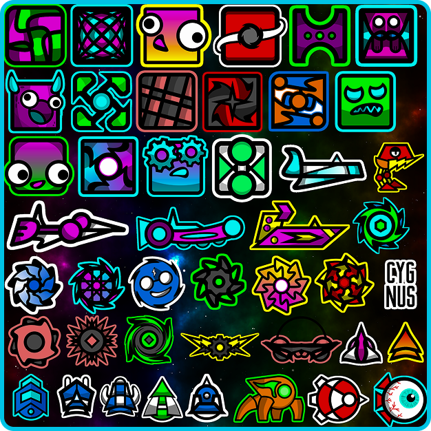
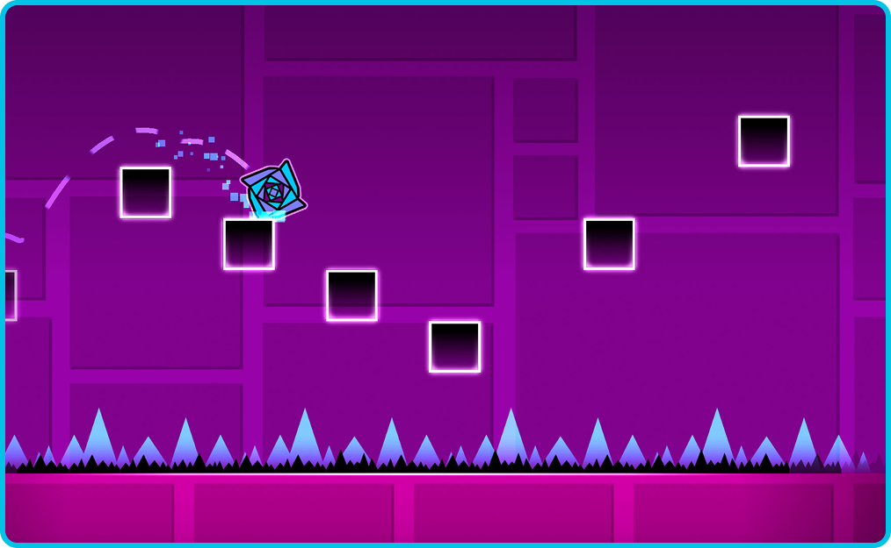

В Geometry Dash скины (или иконки) — это способ
персонализировать своего персонажа и придать игре
индивидуальность. Игрок может разблокировать и
использовать десятки, а то и сотни разных внешних
видов для своего куба и других форм.


В Geometry Dash многие скины отличаются яркими, насыщенными цветами и
запоминающимся дизайном. Среди них особенно выделяются те, что
выполнены в неоновых оттенках — ярко-синие, кислотно-зелёные, алые,
фиолетовые и золотистые. Они выглядят особенно эффектно на контрасте с
тёмным фоном уровней.